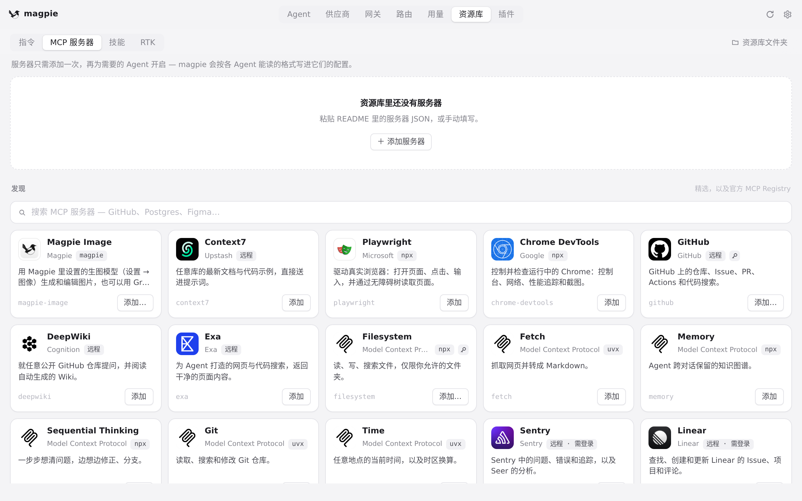
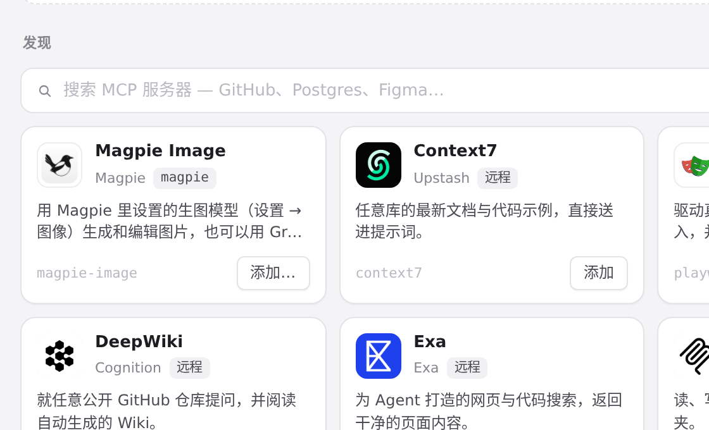
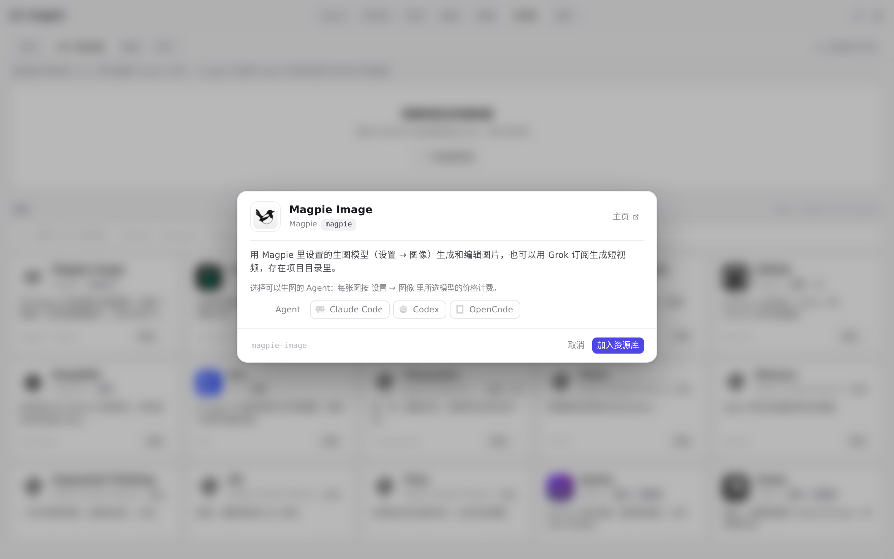

#360 界面预览
commit 6f3647c · 回到 PR · 这个 PR 让 Grok 订阅能在网关里生图（Grok Imagine）和生视频（新增 /v1/videos 等接口，并给 MCP 加了一个 generate_video 工具）。界面上直接可见的改动只有资源库里 Magpie Image 的说明文字（中英各一句）：多了「也可以用 Grok 订阅生成短视频」；其余都是由数据驱动的模型列表变化。
红线是鼠标走过的轨迹，红色圆环是一次点击；底部文字是这一步在做什么。空格暂停，← → 逐段查看。

资源库里 Magpie Image 的说明文字 · 「MCP 服务器」标签下的列表

资源库里 Magpie Image 的说明文字 · 「MCP 服务器」→「发现」里 Magpie Image 卡片的说明文字

资源库里 Magpie Image 的说明文字 · Magpie Image 的详情
生图模型的位置 · 设置 → 图像：生图模型一行